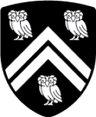

Rice官网校友资源： https://alumni.rice.edu
莱斯大学中国校友会（Rice University Chinese Alumni Association）简称RCAA，是由莱斯大学中国校友自愿结成的联合性、学术性、非营利性的社会组织。旨在增强莱斯大学中国校友间的交流与合作，促进中国校友与母校的联络；全面提升莱斯大学在国际上的知名度，共同为母校的发展贡献力量；服务广大校友，支持广大校友的事业发展。 微信公众号: Rice_Alumni
RAW.photography 致力于创造一个摄影爱好者能够相互交流学习的平台，曾举办过多次 workshop 和 shooting event，涵盖了室内布光、街头摄影、时尚摄影等等领域。
Learn More星空剧社 (Rice Chinese Theater Club) 成立于2015年，旨在推广中文戏剧，为休斯敦地区热爱中文戏剧的人们提供一个交流平台。剧社每年为大家呈现精彩的剧目，往期作品包括《驴得水》、《你好，疯子》等。
Learn More